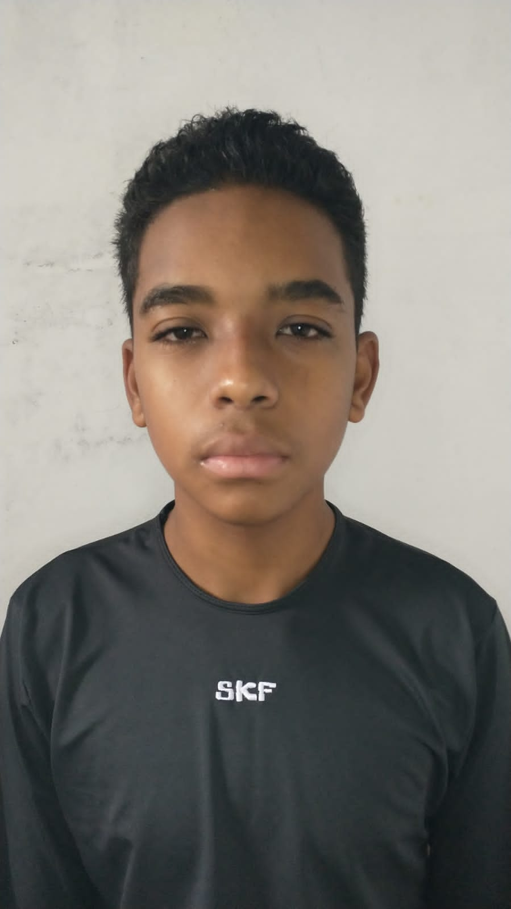

Lucas freitas
artistta 2D e 3D Lider e fundador da Pão batata PONTO io sendo quem reuniu os membros
Matheus Henrique
Programador que não estava presente fisicamente na fundação porém é um fundador
|
Lucas freitasartistta 2D e 3D Lider e fundador da Pão batata PONTO io sendo quem reuniu os membros |
|  | Matheus HenriqueProgramador que não estava presente fisicamente na fundação porém é um fundador |